MANUAL BOOK
SILAKAN
Sistem Informasi Layanan Kantor — Versi 1.0
Buku panduan resmi pengoperasian sistem pemesanan ruangan rapat online berbasis website untuk seluruh Pegawai Unit Kerja (User) dan Admin di lingkungan Kantor Perwakilan Bank Indonesia Provinsi Sulawesi Utara.
Daftar Isi
Gambaran Umum Sistem SILAKAN
1. Apa Itu Sistem SILAKAN?
SILAKAN (Sistem Informasi Layanan Kantor) adalah aplikasi resmi berbasis website internal yang dikembangkan khusus untuk Kantor Perwakilan Bank Indonesia Provinsi Sulawesi Utara guna memfasilitasi seluruh proses pemesanan, verifikasi persetujuan, hingga pemantauan penggunaan ruangan rapat secara transparan, terpadu, dan otomatis.
2. Tujuan Sistem
Sistem SILAKAN hadir untuk menciptakan ketertiban pemanfaatan fasilitas rapat kantor dengan sasaran utama:
- Mencegah Jadwal Bentrok: Validasi otomatis waktu nyata yang memblokir pemesanan ganda pada ruangan dan waktu yang sama.
- Efisiensi Verifikasi: Mempercepat alur persetujuan lembar disposisi secara digital tanpa berkas fisik yang tercecer.
- Notifikasi Otomatis: Konfirmasi persetujuan atau penolakan dikirim langsung ke nomor WhatsApp PIC kegiatan.
- Transparansi Pemakaian: Jadwal rapat dapat dipantau bersama oleh seluruh unit kerja melalui kalender visual.
3. Pengguna Sistem (Hak Akses)
| Jenis Pengguna | Contoh Akun | Fungsi & Hak Akses Utama |
|---|---|---|
| ADMINISTRATOR Admin |
admin |
Memverifikasi & menyetujui pemesanan, memantau rapat berlangsung, mengelola 9 master ruangan, master layout, hari libur, data 10 unit kerja, dan mengunduh laporan eksekutif (Excel & PDF). |
| USER Pegawai Unit Kerja |
tmi_kpwbisulutfiksp_kpwbisulut, dll. |
Mengecek ketersediaan ruangan, membuat pengajuan pemesanan, mengunggah lembar disposisi (maks. 5 MB), memantau riwayat status, mengunduh disposisi, dan membatalkan pemesanan. |
Panduan Administrator: Login & Dashboard
1.1 Login Administrator
Fungsi: Digunakan oleh tim Administrator untuk mengautentikasi hak akses penuh dalam mengelola seluruh sistem pemesanan ruangan SILAKAN.
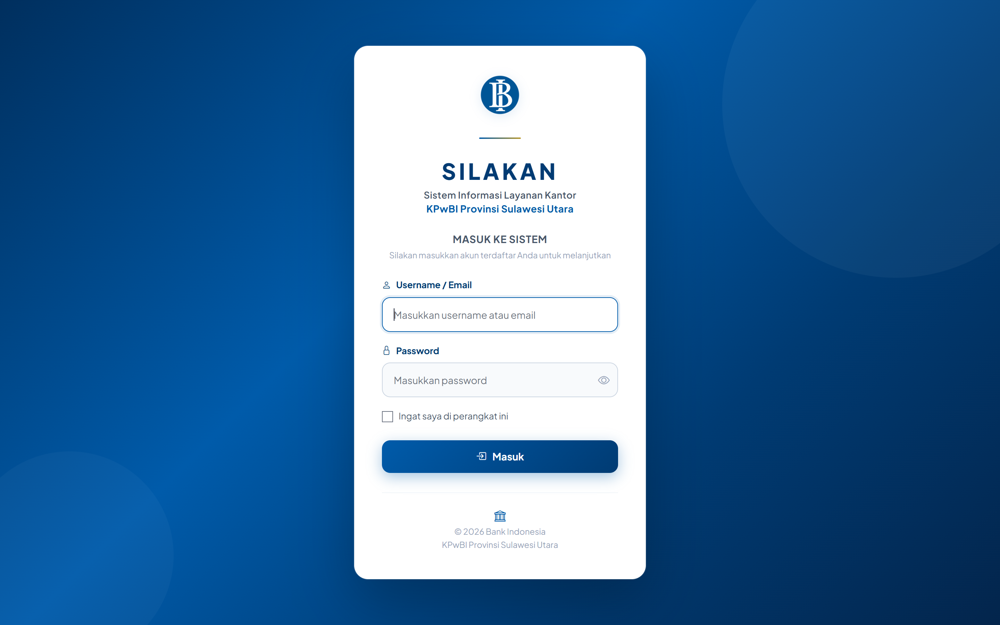
- Buka peramban web dan akses alamat resmi SILAKAN.
- Ketikkan username Administrator (
admin) atau email resmi yang terdaftar. - Masukkan kata sandi akun Admin. Anda dapat mengeklik ikon mata untuk memastikan kata sandi benar.
- Klik tombol Masuk untuk membuka panel administrasi.
1.2 Dashboard Analitik Administrator
Fungsi: Menampilkan ringkasan data operasional secara visual, meliputi total pemesanan, permohonan pending yang perlu ditindaklanjuti, dan pemantauan kegiatan aktif hari ini.
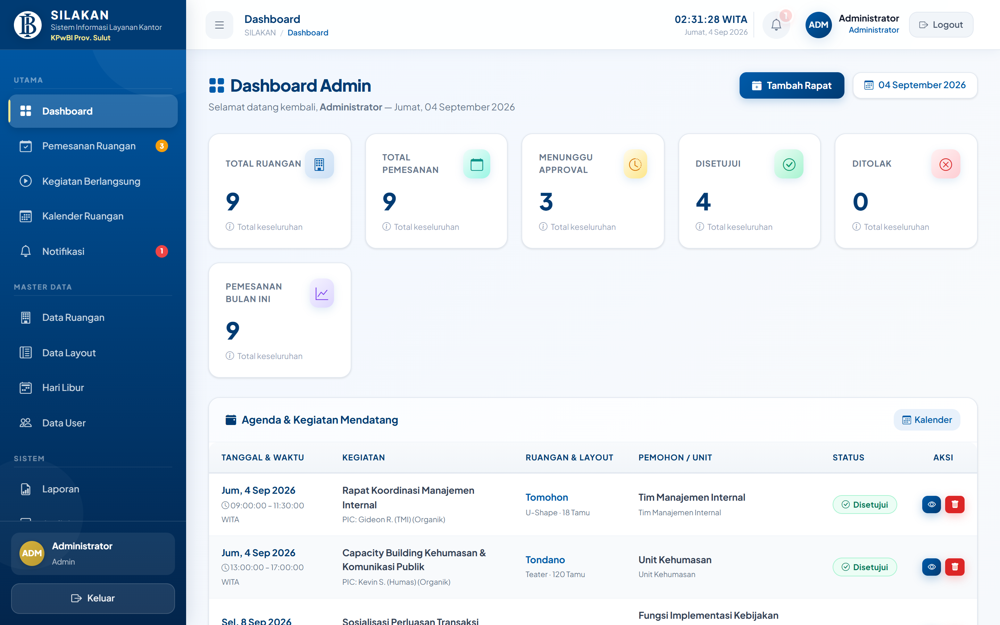
- Lihat Kartu Indikator Utama untuk mengetahui jumlah pemesanan Pending, Disetujui, dan Kegiatan Hari Ini.
- Periksa daftar Menunggu Persetujuan untuk segera memproses permohonan terbaru dari unit kerja.
- Gunakan tombol pintasan di bagian atas dashboard untuk aksi cepat verifikasi data.
1.3 Manajemen Persetujuan (Approval) & Penolakan Pemesanan
Fungsi: Memeriksa keabsahan lembar disposisi pimpinan, kesesuaian kapasitas ruangan, dan memutuskan apakah pengajuan pemesanan disetujui atau ditolak dengan alasan resmi.
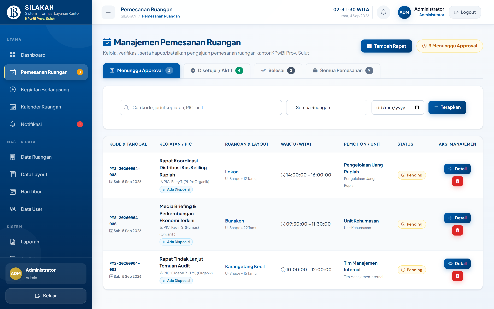
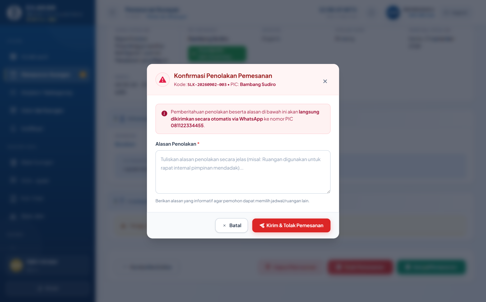
- Klik menu Persetujuan / Approval pada navigasi sebelah kiri.
- Pilih pemesanan berstatus Pending, lalu klik tombol Tinjau / Review.
- Periksa detail tanggal, jam WITA, nama PIC, jumlah tamu, layout, dan klik berkas untuk melihat Lembar Disposisi.
- Jika dokumen dan jadwal sudah tepat, klik tombol hijau Setujui Pemesanan. Notifikasi persetujuan otomatis terkirim via WhatsApp ke nomor PIC.
- Pada halaman peninjauan pemesanan, klik tombol merah Tolak Pemesanan.
- Jendela modal popup konfirmasi penolakan akan muncul di layar (seperti pada Gambar 1.4).
- Wajib ketikkan Alasan Penolakan (contoh: "Ruangan digunakan untuk kegiatan mendadak Pimpinan Kantor" atau "Lampiran disposisi belum ditandatangani").
- Klik Ya, Tolak Permohonan. Sistem akan mencatat riwayat penolakan dan mengirimkan alasan tersebut langsung ke WhatsApp pemohon.
1.4 Live Monitoring Rapat & 1.5 Kalender Ruangan
1.4 Live Monitoring Kegiatan Berlangsung (Early Finish)
Fungsi: Memantau kegiatan rapat yang sedang aktif saat ini secara real-time serta menyediakan fitur untuk menyelesaikan penggunaan ruangan lebih awal agar ruangan dapat segera dipakai kembali.
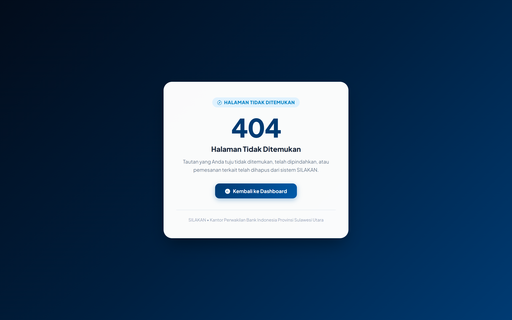
- Pilih menu Kegiatan Berlangsung / Monitoring pada menu navigasi.
- Lihat daftar ruangan yang sedang berstatus Berlangsung beserta sisa durasi waktu rapat.
- Jika kegiatan rapat selesai sebelum jam berakhir, Admin dapat mengeklik tombol Selesaikan Sekarang (Early Finish) untuk langsung mengosongkan status ruangan.
1.5 Kalender Jadwal Ruangan
Fungsi: Menyajikan visualisasi matriks agenda rapat kantor secara bulanan dan mingguan untuk mempermudah pengecekan ketersediaan seluruh ruangan rapat.

- Buka menu Kalender Ruangan pada menu navigasi.
- Pilih filter ruangan tertentu atau tampilkan seluruh ruangan rapat KPwBI Sulut.
- Klik pada blok agenda rapat untuk melihat ringkasan unit peminjam, jam kegiatan, dan nama PIC.
1.6 Pengelolaan Master Ruangan & 1.7 Master Layout
1.6 Pengelolaan Master Ruangan (9 Ruangan Resmi)
Fungsi: Menambah ruangan baru, memperbarui kapasitas, mengatur lokasi lantai gedung, dan mengaktifkan/menonaktifkan ruangan yang sedang dalam masa perawatan (*maintenance*).
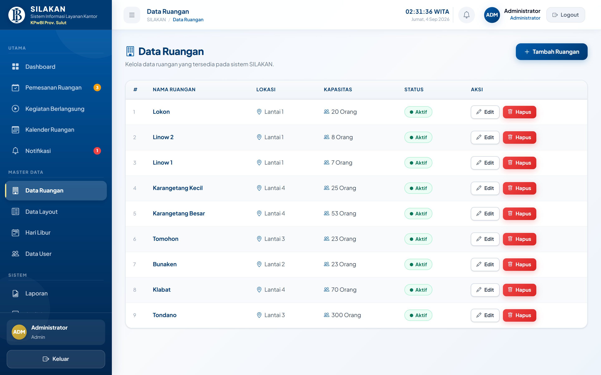
- Klik menu Master Data > Data Ruangan.
- Klik tombol biru + Tambah Ruangan untuk mendaftarkan ruangan baru.
- Isi Nama Ruangan, Kapasitas Tamu Maksimum, Lokasi Lantai, dan pilih pilihan Tata Letak (Layout) yang didukung.
- Gunakan tombol Edit untuk mengubah data atau tombol Status untuk menonaktifkan ruangan sementara waktu.
1.7 Pengelolaan Master Layout Ruangan
Fungsi: Mengelola standar tata letak meja dan kursi rapat (misalnya U-Shape, Classroom, Teater, Interview Set, Transit Room, Round Table) beserta kapasitas rekomendasi.
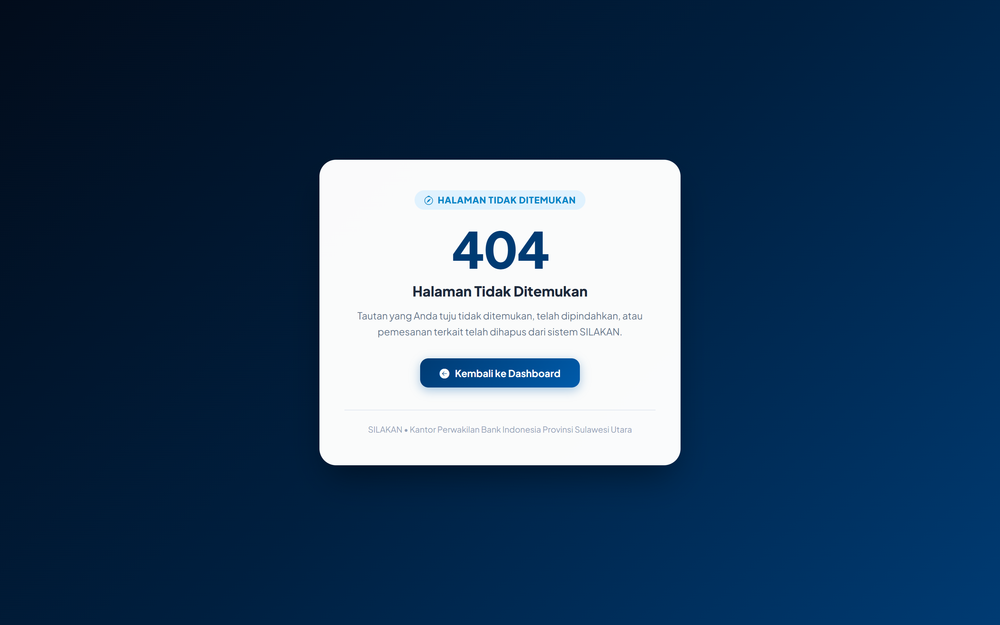
- Klik menu Master Data > Layout Ruangan.
- Lihat daftar model tata letak yang tersedia di sistem.
- Klik Tambah Layout jika terdapat konfigurasi ruangan baru yang disediakan oleh teknisi.
1.8 Master Hari Libur & 1.9 Manajemen Pengguna
1.8 Master Hari Libur & Sinkronisasi API Otomatis
Fungsi: Menetapkan kalender libur nasional dan cuti bersama agar sistem otomatis memblokir pemesanan ruangan pada hari libur resmi.
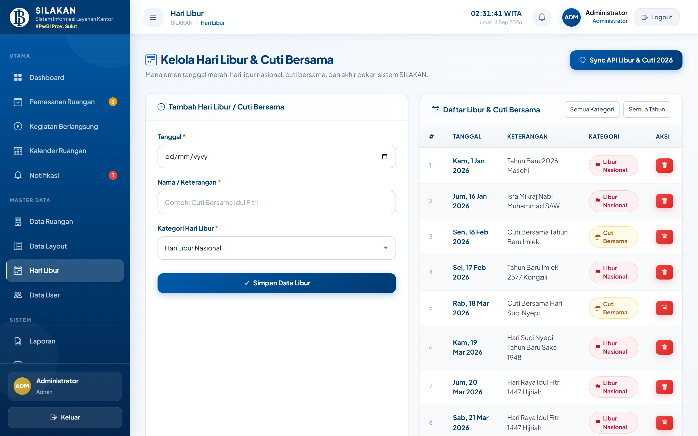
- Pilih menu Master Data > Hari Libur.
- Klik tombol hijau Sinkronisasi Hari Libur untuk menarik data hari libur nasional secara otomatis dari server API resmi.
- Admin juga dapat mengeklik + Tambah Manual jika terdapat hari libur khusus lokal atau kegiatan kantor intern.
1.9 Manajemen Akun Pengguna (10 Unit Kerja Resmi)
Fungsi: Mengelola akun 10 Unit Kerja resmi KPwBI Sulut, melakukan reset kata sandi, serta melihat dan menyalin kata sandi unit kerja dengan aman.
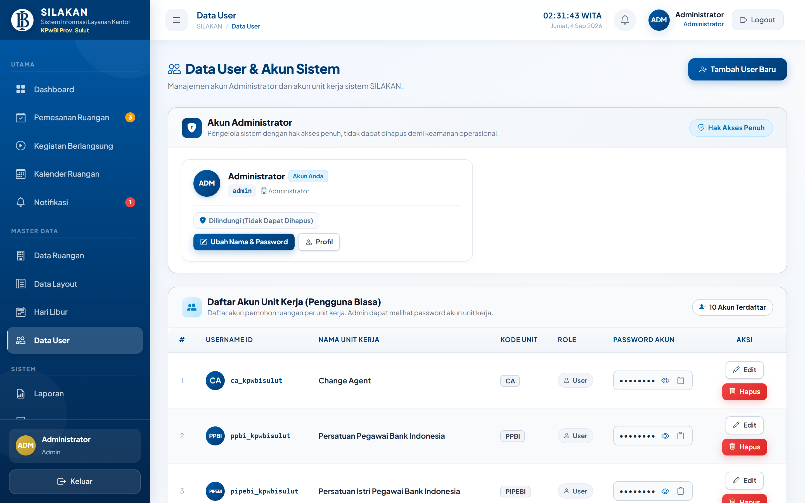
- Buka menu Data User di navigasi kiri.
- Pada kolom Password Akun, kata sandi tersamarkan secara aman (
••••••••). - Klik Ikon Mata (Lihat Sandi) untuk menampilkan teks sandi unit kerja.
- Klik Ikon Salin (Clipboard) untuk menyalin kata sandi langsung tanpa perlu mengetik ulang.
- Klik tombol Edit jika ingin mengubah nama unit, username, atau mengatur ulang kata sandi baru.
1.10 Laporan Pemesanan, Ekspor Data & Logout
1.10 Laporan Pemesanan & Ekspor Data (Excel & PDF)
Fungsi: Menyajikan rekapitulasi penggunaan ruangan rapat berdasarkan rentang tanggal, status, atau unit kerja, serta menyediakan unduhan data dalam format spreadsheet Excel dan dokumen cetak PDF resmi.
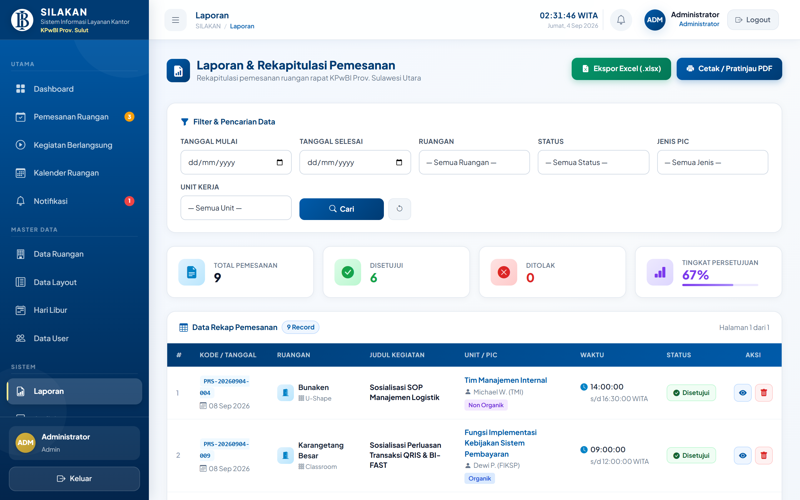
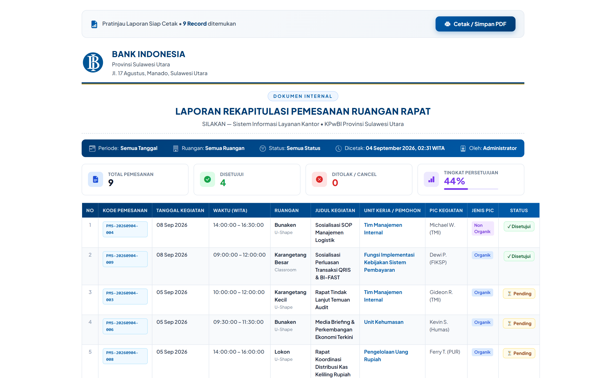
- Buka menu Laporan pada sidebar.
- Tentukan rentang Tanggal Mulai dan Tanggal Selesai laporan.
- Pilih filter ruangan atau biarkan Semua Ruangan, lalu klik Tampilkan Data.
- Klik tombol hijau Ekspor Excel (.xlsx) untuk mengunduh data secara instan tanpa hambatan loading.
- Klik tombol merah Cetak PDF untuk menghasilkan dokumen cetak rekapitulasi resmi bertanda tangan.
1.11 Profil Administrator & Logout
Fungsi: Memperbarui informasi profil admin, mengganti password akun admin, dan keluar dari sistem dengan aman.
- Klik foto profil atau nama akun di pojok kanan atas, lalu pilih Profil Saya.
- Untuk keluar dari akun, klik menu Logout / Keluar di pojok kanan atas atau di bagian bawah sidebar.
- Sistem akan mengakhiri sesi aktif dan mengembalikan tampilan ke halaman login utama.
Panduan User: Login & Dashboard Pengguna
2.1 Login Akun Unit Kerja (tmi_kpwbisulut)
Fungsi: Digunakan oleh pegawai unit kerja untuk masuk ke SILAKAN menggunakan akun resmi masing-masing fungsi/unit di KPwBI Sulut (seperti Tim Manajemen Internal / tmi_kpwbisulut).
- Buka peramban web pada alamat aplikasi SILAKAN.
- Ketikkan username unit kerja Anda (contoh:
tmi_kpwbisulut). - Ketikkan kata sandi unit kerja, lalu klik tombol biru Masuk.
2.2 Dashboard Pengguna (Halaman Utama)
Fungsi: Menampilkan ringkasan status permohonan rapat milik unit kerja Anda, agenda rapat aktif hari ini, dan tombol pintasan pengajuan pemesanan baru.
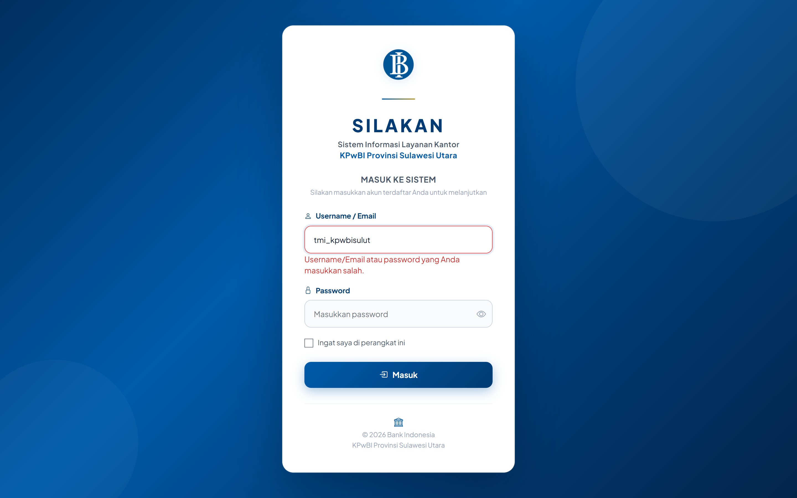
- Lihat statistik jumlah pemesanan Anda (Pending, Disetujui, dan Selesai).
- Periksa bagian Kegiatan Hari Ini untuk melihat rapat unit kerja yang siap dilaksanakan.
- Klik tombol biru + Buat Pemesanan Ruangan untuk langsung mengisi permohonan baru.
2.3 Melihat Ketersediaan Ruangan
Fungsi: Sebelum membuat pemesanan, pengguna dapat membuka menu Kalender Ruangan untuk melihat jadwal rapat yang sudah terisi sehingga dapat memilih waktu yang kosong tanpa bentrok.
2.4 Mengisi Formulir Pemesanan Ruangan & Layout Dinamis
Fungsi: Mengajukan permohonan peminjaman fasilitas ruangan rapat dengan mengisi rincian kegiatan secara lengkap dan benar.

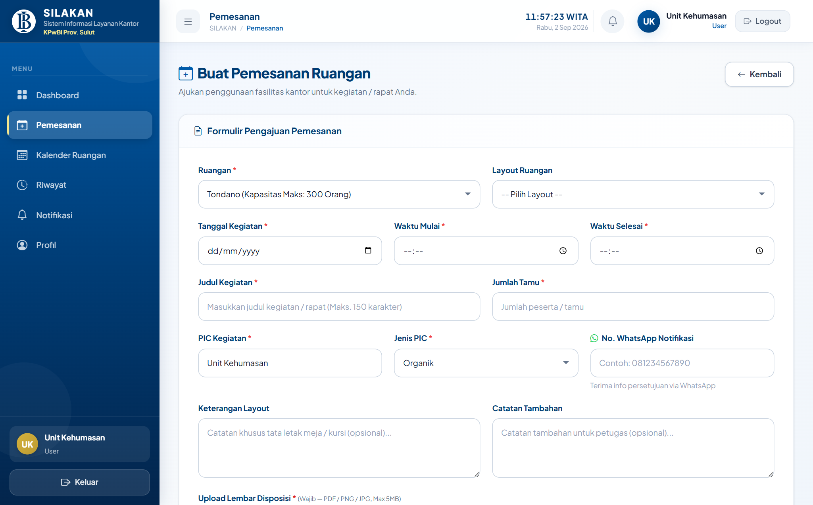
| Kolom Isian | Wajib? | Panduan Pengisian |
|---|---|---|
| Pilihan Ruangan | Wajib | Pilih salah satu dari 9 ruangan rapat (Tondano, Klabat, Bunaken, Tomohon, Karangetang Besar/Kecil, Linow 1/2, Lokon). |
| Pilihan Layout | Opsional | Tata letak meja-kursi (U-Shape, Classroom, Teater, Round Table). Pilihan otomatis menyesuaikan dengan ruangan yang dipilih. |
| Tanggal Kegiatan | Wajib | Pilih tanggal rapat. Sistem otomatis menolak tanggal hari libur atau cuti bersama nasional. |
| Waktu Mulai & Selesai | Wajib | Tentukan jam dalam format WITA. Sistem otomatis memvalidasi bila waktu bentrok dengan rapat lain. |
| Nama & WA PIC | Wajib | Nama penanggung jawab dan Nomor WhatsApp aktif (contoh: 08123456789) untuk menerima notifikasi status persetujuan. |
| Upload Disposisi | Wajib | Unggah berkas lembar disposisi / nota dinas format PDF, JPG, atau PNG (maksimal ukuran 5 MB). |
2.5 Validasi Berkas Disposisi & 2.6 Riwayat Status
2.5 Ketentuan Berkas Disposisi & Popup Validasi 5 MB
Fungsi: Menjamin berkas yang diunggah memenuhi standar sistem. Jika berkas yang dipilih melebihi 5 MB, sistem secara otomatis langsung menampilkan jendela modal popup peringatan seketika saat berkas dipilih.
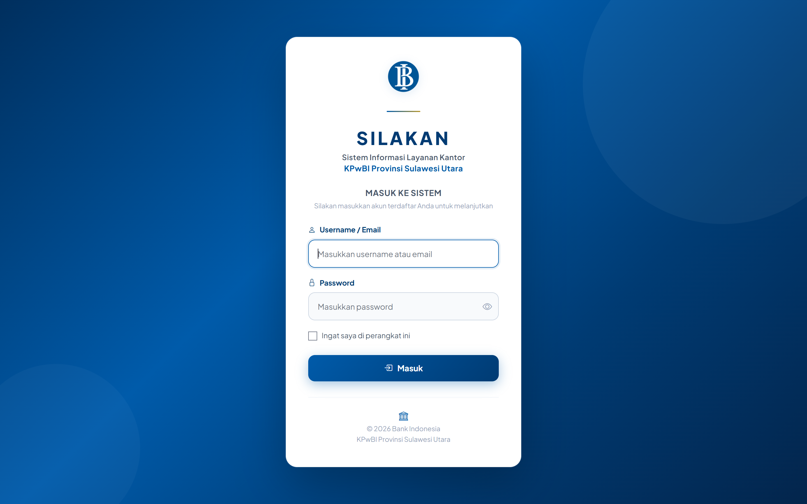
- Klik area dropzone unggah atau seret berkas (*drag and drop*) lembar disposisi Anda.
- Jika ukuran berkas lebih dari 5 MB, sistem langsung membatalkan pilihan berkas dan memunculkan popup peringatan (Gambar 2.4).
- Klik tombol Mengerti pada popup, lalu perkecil (kompres) berkas PDF atau gambar Anda agar ukurannya di bawah 5 MB.
2.6 Riwayat Pemesanan & Pemantauan Status
Fungsi: Melihat seluruh daftar pengajuan yang pernah diajukan unit kerja beserta tahapan status persetujuannya.

| Label Status | Arti & Makna Status Pemesanan |
|---|---|
| Pending | Permohonan berhasil dikirim dan sedang menunggu pemeriksaan berkas oleh Admin. |
| Disetujui | Pemesanan disetujui resmi. Ruangan telah terjadwal dan siap dipergunakan sesuai jam yang diajukan. |
| Ditolak | Permohonan ditolak oleh Admin. Alasan penolakan dapat dilihat di detail pemesanan atau pesan WA. |
| Berlangsung | Kegiatan rapat saat ini sedang aktif berlangsung di ruangan yang ditentukan. |
| Selesai | Kegiatan rapat telah selesai dilaksanakan dan ruangan telah dikembalikan ke status kosong. |
| Dibatalkan | Pemesanan telah dibatalkan atas inisiatif pengguna unit kerja itu sendiri. |
2.7 Detail Pemesanan, Pembatalan & Notifikasi
2.7 Melihat Detail Pemesanan & Unduh Disposisi
Fungsi: Memeriksa seluruh informasi lengkap pengajuan dan mengunduh berkas lembar disposisi yang telah diunggah sebelumnya.
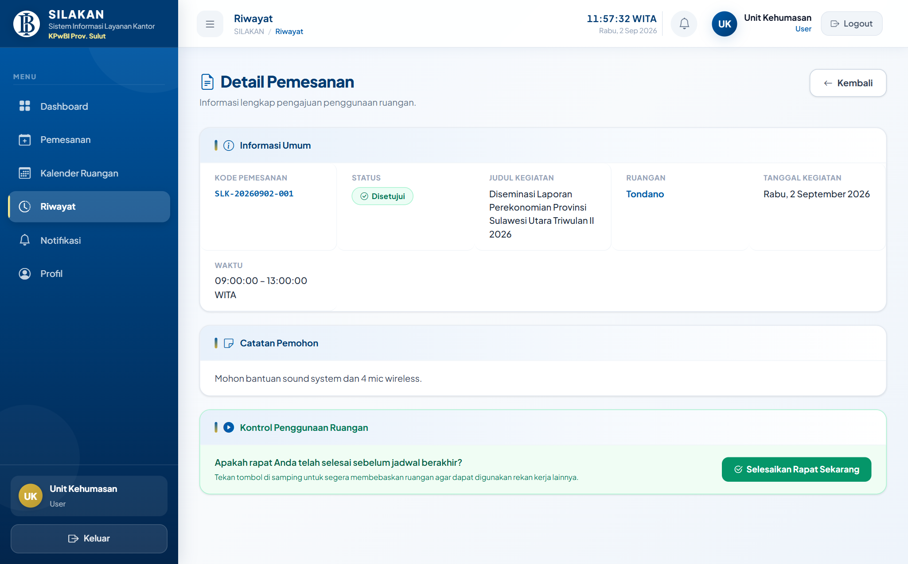

- Pada tabel Riwayat Pemesanan, klik tombol Detail pada baris pemesanan Anda.
- Klik tautan Unduh / Lihat Lembar Disposisi untuk membuka dokumen lampiran.
2.8 Membatalkan Pemesanan Ruangan
Fungsi: Membatalkan pemesanan yang tidak jadi diselenggarakan agar jadwal ruangan kembali terbuka untuk unit kerja lain.
- Buka halaman Detail Pemesanan yang masih berstatus Pending atau Disetujui.
- Klik tombol merah Batalkan Pemesanan, isi alasan pembatalan singkat, lalu konfirmasi.
2.9 Notifikasi Otomatis WhatsApp Gateway
Fungsi: Setiap kali status pemesanan Anda disetujui atau ditolak oleh Admin, sistem SILAKAN otomatis mengirimkan pemberitahuan resmi ke nomor WhatsApp PIC yang tercantum di formulir.
2.10 Profil Pengguna & Logout
Fungsi: Mengubah kata sandi akun unit kerja dan keluar dari aplikasi dengan aman melalui tombol Logout di sudut kanan atas.
Tips & Catatan Penting Penggunaan
Tips & Prosedur Penggunaan Sistem
Untuk memastikan kelancaran operasional rapat di lingkungan Kantor Perwakilan Bank Indonesia Provinsi Sulawesi Utara, perhatikan hal-hal mendasar berikut:
081234567890) tanpa karakter khusus. Nomor ini merupakan saluran utama pengiriman konfirmasi persetujuan dari server SILAKAN.
Layanan Bantuan & Kontak Dukungan Admin
| Pengelola Sistem | Lokasi Operasional | Saluran Kontak Internal |
|---|---|---|
| Tim Administrator SILAKAN KPwBI Prov. Sulawesi Utara |
Gedung Kantor Perwakilan Bank Indonesia Prov. Sulawesi Utara — Lantai 3 | Ext. Telepon Internal: Admin SILAKAN Email: admin_silakan@bi.go.id |